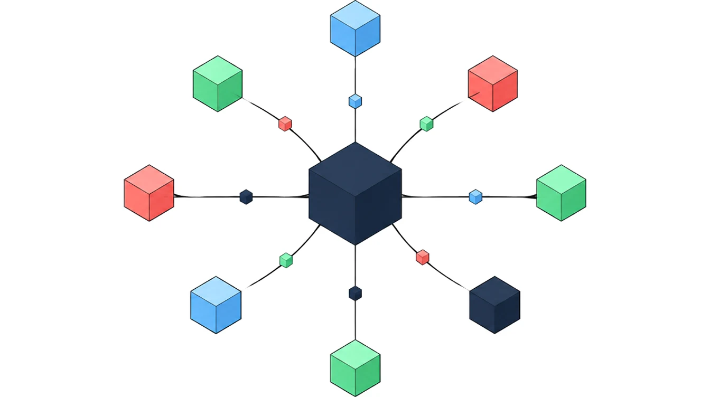

Kala CRM · תוצרת כחול לבן
הטמעת Kala CRM: מערכת CRM ישראלית, בהתאמה באמת אישית
ליוויתי את הפיתוח של Kala CRM מהיום הראשון שלה ועד היום.
יחד פיתחנו פתרון לחברות ישראליות שצריכות שירות אישי והתאמה באמת אישית: מערכת שמאפשרת לבנות כמעט כל תהליך שאפשר לדמיין.

על המערכת
מה זה Kala CRM (קאלה)?
מערכת ישראלית לניהול, לשיווק ולאוטומציה של העסק.
פניות, לקוחות, מכירות, חיובים, יומנים ותקשורת עם לקוחות, במערכת אחת ובעברית מלאה.
בעיניי, אחת המערכות המתקדמות והנוחות בישראל.
- ריכוז וניהול של פניות ולידים מכל המקורות
- מאגר לקוחות ותיקי לקוח
- הזמנות ותהליכי מכירה
- הצעות מחיר עם פולו-אפ אוטומטי
- מסמכי הנהלת חשבונות
- סליקת אשראי, ארנקים דיגיטליים והוראות קבע (מס"ב)
- מנויים וחיוב מחזורי
- מרכזייה טלפונית, וואטסאפ, SMS ואימייל
- אוטומציות ובוטים מבוססי AI
- יומנים, משימות וזימון פגישות עצמאי
- ניהול פרויקטים, מלאי וספקים
- חיבור לאתרי WordPress ולמערכות נוספות
כחול לבן
למה מערכת CRM ישראלית
עסק ישראלי עובד עם סליקה ישראלית, עם הנהלת חשבונות ישראלית ועם לקוחות שמדברים עברית.
מערכת שנבנתה כאן כבר מחוברת לכל זה.
- עברית מלאהמערכת שנבנתה בעברית, מימין לשמאל, לעסקים שעובדים בישראל.
- ספקים ישראלייםסליקה, הנהלת חשבונות, מרכזיות טלפוניות, מס"ב ווואטסאפ, מחוברים מהמערכת עצמה.
- התאמה באמת אישיתהשדות, המסכים והתהליכים נבנים לפי הדרך שבה העסק עובד, ולא להפך.
- שירות אישיתמיכה בעברית, ומערכת שמתעדכנת ומשתפרת באופן קבוע.
חיבורים
מחוברת לספקים שעסק ישראלי צריך
אלה השותפים העסקיים והמערכות שאני מחבר ומכיר מקרוב: סליקה, הנהלת חשבונות, טלפוניה, דיוור, שילוח, אוטומציה ו-AI.

מה אני עושה
מאפיון ועד מערכת שעובדת בשבילכם
אני מכיר את Kala CRM מבפנים, מהיום הראשון שלה.
זה מה שמאפשר לי לבנות בה תהליכים שמערכות אחרות לא מאפשרות.
אפיון התהליכים
יושבים יחד על העסק, ומגדירים בדיוק מה המערכת צריכה לעשות.
הקמה והתאמה אישית
בונה את המערכת לפי האפיון: שדות, מסכים, הרשאות ותהליכים.
אוטומציות, בוטים ו-AI
מה שחוזר על עצמו עובר לאוטומציה, ובוטים מבוססי AI עונים ללקוחות.
חיבורים, הדרכה וליווי
מחבר לספקים שהעסק עובד איתם, מדריך את הצוות ונשאר ללוות.
שאלות נפוצות
שאלות ותשובות על Kala CRM
מה זה Kala CRM?
Kala CRM (קאלה) היא מערכת ישראלית לניהול, לשיווק ולאוטומציה של העסק: פניות, לקוחות, מכירות, חיובים, יומנים ותקשורת עם לקוחות במערכת אחת, בעברית מלאה ובהתאמה אישית.
למי Kala CRM מתאימה?
לחברות ולעסקים ישראליים שרוצים מערכת CRM בעברית, שירות אישי, ותהליכים שמותאמים בדיוק לדרך שבה הם עובדים.
מה ההבדל בין Kala CRM למערכות CRM בינלאומיות?
Kala היא מערכת תוצרת כחול לבן: היא בנויה בעברית, מחוברת לספקים הישראליים (סליקה, הנהלת חשבונות, מרכזיות, מס"ב ווואטסאפ), וניתנת להתאמה אישית עמוקה עם שירות מקומי.
לאילו מערכות Kala CRM מתחברת?
לסליקת אשראי ולארנקים דיגיטליים, למערכות הנהלת חשבונות, למרכזיות טלפוניות, למס"ב, לוואטסאפ, ל-SMS ולאימייל, לאתרי WordPress, ולמערכות נוספות דרך אינטגרציות בהתאמה אישית.
אפשר להתאים את Kala CRM לתהליך ייחודי של העסק?
כן, וזה הלב של המערכת.
אפשר לבנות בה כמעט כל תהליך שאפשר לדמיין, ואני מאפיין ובונה אותו יחד עם העסק.
יש ב-Kala CRM בינה מלאכותית?
כן.
המערכת כוללת אוטומציות ובוטים מבוססי AI, שעונים לפניות ומייעלים את השירות ואת המכירות.
מה הקשר שלי ל-Kala CRM?
אני מלווה את הפיתוח של Kala CRM מהיום הראשון שלה ועד היום.
אני מאפיין, מקים ומטמיע את המערכת בחברות, ומלווה אותן לאורך זמן.
כמה עולה הטמעה של Kala CRM?
המחיר תלוי בהיקף ההטמעה, ולכן הוא לא מפורסם באתר.
הייעוץ הראשוני חינם.
Kala CRM
נדבר על Kala CRM?
כמה מילים על העסק ועל מה שחסר בו היום, ואחזור אליכם.
אפשר גם לתאם שיחה ישר ביומן שלי.
האתר הרשמי של המערכת: kala-crm.co.il (נפתח בלשונית חדשה). מחפשים מערכת בינלאומית? יש לי גם סוכנות GoHighLevel.